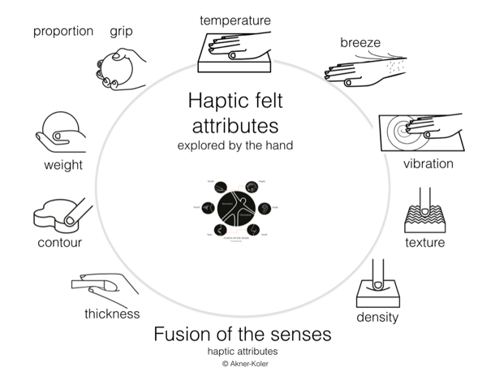
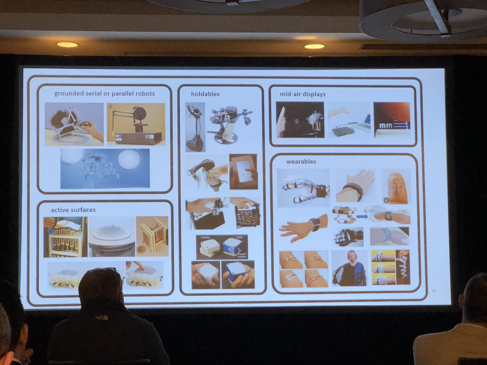

CPSC 599+601 Creative Computing
Glueing Modalities: Sequencers, Mappers + Mapping Tools Workshop 2026


2026-09-10
Schedule
(Subject to change with notification - in D2L > Course Information > Schedule)
| Week | Tuesday | Thursday |
|---|---|---|
| Week 1 (Aug 31 - Sep 4) | Lecture (Course Intro) | Lecture (Creative Computing: Versioning, Documentation, Integration) |
| Week 2 (Sep 7-11) | Lecture (Accessibility) | Lecture (*Glueing Modalities: Sequencers, Mappers*) + Mapping Tools Workshop 2026 |
| Week 3 (Sep 14-18) | (Personal) Pitch (Course Expectations and Project Ideation) | Lecture + Studio (Audio: Synthesis, Sampling, Spatial) |
| Week 4 (Sep 21-25) | Interactive Presentations (Audio) | Lecture + Studio (Vision: Graphics, Video, Projection Mapping) |
| Week 5 (Sep 28 - Oct 2) | Interactive Presentations (Vision) | Lecture + Studio (Touch: Haptics) |
| Week 6 (Oct 5-9) | Interactive Presentations (Touch) | Lecture + Studio (Interaction: Input, Cameras, Sensors, Embedded Computing) |
| Week 7 (Oct 12-16) | Interactive Presentations (Interaction) | (Guest) Lecture (Gen AI) by Ahmed Abuzuraiq |
| Week 8 (Oct 19-23) | (Group) Pitch (Project Ideation) | (Group) Project (Low-fidelity Prototyping) |
| Week 9 (Oct 26-30) | Interactive Presentations (Low-fidelity Prototype Showcase) | (Group) Project (High-fidelity Prototyping) |
| Week 10 (Nov 2-6) | None (Term Break) | None (Term Break) |
| Week 11 (Nov 9-13) | (Group) Project (High-fidelity Prototyping) | (Group) Project (High-fidelity Prototyping) |
| Week 12 (Nov 16-20) | Interactive Presentations (High-fidelity Prototype Showcase) | (Group) Project (Final Version Prototyping) |
| Week 13 (Nov 23-27) | (Group) Project (Final Version Prototyping) | (Group) Project (Final Version Prototyping) |
| Week 14 (Nov 30 - Dec 4) | Interactive Presentations (Final Version Showcase) | Individual Reflections Due + (Group) Project Documentation Due + Lecture (Course Reflection) |
Today’s outline
- Very short introduction
- Glueing Modalities: Sequencers, Mappers
- 7th Annual Mapping Tools Workshop 2026 organized by Joseph Malloch, Dalhousie University, Graphics and Experiential Media (GEM) Lab
Glueing Modalities: Sequencers, Mappers
How to connect…
SAT’s tools and interoperability (2023)
Supporting creative artifacts at the 
3 Canadian tools
7th Annual Mapping Tools Workshop 2026
Program
- Introductions
- News & Library updates
- Proposals & discussions
- Haptics + Mapping
Christian Frisson, University of Calgary, SHIVERS Group - ML + Mapping
Benjamin Lavastre, McGill University, Input Devices and Music Interaction Laboratory (IDMIL) - Documentation: probably
D. Andrew Stewart, University of Lethbridge, T-Stickist
- Haptics + Mapping
- General discussion & roadmap planning
Haptics + Mapping
What senses do haptics stimulate?

Cheryl Akner Koler, 2016
What devices provide haptic feedback?

Dr. Mar Gonzalez-Franco (Microsoft Research)’s photograph of a slide of the presentation from Nick Colonnese (Facebook) at the Smart Haptics conference, 2019
What types of haptic signals?
- Vibrotactile
- Amplitude signal (input)
- Force
- Position (often output)
- Force (often input)
- Velocity (often input)
What properties from haptic signals?
- Medium sampling rate:
- < 0.1 Hz (thermal)
- 100-400 Hz (vibrotactile)
- > 1000 Hz (force)Colgate, J. E., and J. M. Brown. 1994. “Factors Affecting the Z-Width of a Haptic Display.” Proceedings of the 1994 IEEE International Conference on Robotics and Automation, May, 3205–10 vol.4.
- Low latency: <1 ms
More info: Samur, Evren. 2012. Performance Metrics for Haptic Interfaces. Springer Series on Touch and Haptic Systems. Springer-Verlag.
How to transport haptic signals (in libmapper)?
- TCP/UDP/OSC/Websocket (hard to reach <1ms of latency)?
- Why not audio (usually 16 bit 44,1 kHz)?
Haptics in Libmapper?
From libmapper’s README.md future-plans
High-frequency data for example might be better transmitted using the JACK Audio Connection Kit or something similar.
Conclusion
- Supporting vibrotactile haptics in libmapper using audio as carrier would expand the design space of haptics by reusing the breadth of audio processing and tools (as started by Ali Israr et al. with StereoHaptics).
- Supporting force-feedback haptics in libmapper might require sparse signal exchange between modules for their distributed closed-loop control to maintain the stability of haptics.